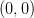
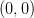
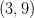
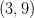
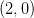
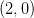

6.3 Polinômios de Lagrange
Outra maneira clássica de resolver o problema da interpolação polinomial é
através dos polinômios de Lagrange. Dado um conjunto de pontos  distintos dois a dois, definimos os polinômios de Lagrange como os polinômios de
grau
distintos dois a dois, definimos os polinômios de Lagrange como os polinômios de
grau  que satisfazem
que satisfazem

 que interpola os pontos dados, tais
que interpola os pontos dados, tais
 é dado por
é dado por

Para construir os polinômios de Lagrange, podemos analisar a sua forma fatorada, ou seja:

 é obtido da condição
é obtido da condição  :
:


Observação 6.3.1. O problema de interpolação quando escrito usando como base os polinômios de Lagrange produz um sistema linear diagonal.
Exemplo 6.3.1. Encontre o polinômio da forma  que passa pelos pontos ,
que passa pelos pontos ,  ,
,  , . Escrevemos:
, . Escrevemos:

 |
Em Python, podemos usar a função numpy.poly, por exemplo:
>>> yi = np.array([0,1,4,9], dtype=’double’)
>>> L1 = np.poly([xi[1],xi[2],xi[3]]);L1=L1/np.polyval(L1,xi[0]);L1
array([-0.16666667, 1. , -1.83333333, 1. ])
>>> L2 = np.poly([xi[0],xi[2],xi[3]]);L2=L2/np.polyval(L2,xi[1]);L2
array([ 0.5, -2.5, 3. , 0. ])
>>> L3 = np.poly([xi[0],xi[1],xi[3]]);L3=L3/np.polyval(L3,xi[2]);L3
array([-0.5, 2. , -1.5, -0. ])
>>> L4 = np.poly([xi[0],xi[1],xi[2]]);L4=L4/np.polyval(L4,xi[3]);L4
array([ 0.16666667, -0.5 , 0.33333333, 0. ])
>>> a = yi[0]*L1 + yi[1]*L2 + yi[2]*L3 + yi[3]*L4;a
array([ 0., 1., 0., 0.])
Para plotar os pontos e o polinômio interpolador, podemos usar:
>>> plt.plot(xi,yi,’ro’,xx,np.polyval(a,xx),’b-’)
>>> plt.grid();plt.show()
 ,
,  , ,
, ,  .
.
Solução. Como as abscissas são as mesmas do exemplo anterior, podemos utilizar os mesmos polinômios de Lagrange, assim temos:
|
|

* As versões do livro disponíveis no site podem estar desatualizadas, veja a versão PDF atual no repositório GitHub oficial do projeto.
- IME - UFRGS